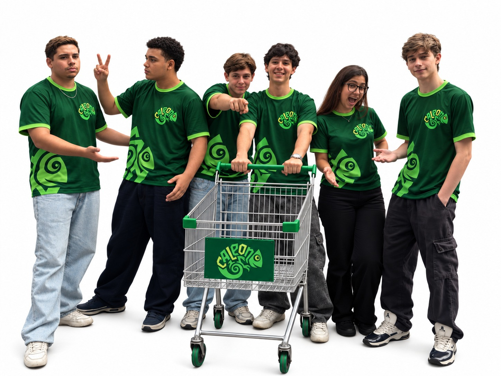

TCC • DESENVOLVIMENTO DE SISTEMAS • 2026
Gestão de mercado
Gestão de mercado
mais clara, integrada
e inteligente.
O Caleon nasceu como um projeto acadêmico para unir gestão operacional, controle de estoque e experiência de compra em uma única plataforma.
Visão geral
Seu negócio em um só lugar
ONLINE
Desempenho
Últimos períodos
Caleon
Caleon
NOSSO TCC
Mais que um sistema.
Uma solução para o varejo.
O Caleon foi concebido para pequenos e médios mercados que precisam centralizar operações e, ao mesmo tempo, oferecer uma jornada digital simples ao consumidor. A proposta integra um módulo administrativo, um aplicativo para o cliente e uma estrutura de dados que conecta estoque, pedidos, produtos e usuários.
Gestão operacional
Cadastro de produtos, monitoramento de estoque, gestão de fornecedores, fila de pedidos e indicadores financeiros em um painel gerencial.
Experiência do cliente
Catálogo, busca e filtros, favoritos, sacola, checkout, perfil, histórico de compras e acompanhamento do pedido.
Integração
Front-end, back-end e banco de dados trabalhando em conjunto para formar um ecossistema único, responsivo e escalável.
POR QUE ESCOLHEMOS ESTE TEMA?
Porque gestão eficiente
Porque gestão eficiente
também é tecnologia.
O varejo alimentar reúne processos que acontecem ao mesmo tempo: estoque, pedidos, preços, fornecedores, vendas e atendimento. Quando essas informações ficam espalhadas, a rotina perde agilidade e a tomada de decisão se torna mais difícil.
A escolha do tema surgiu da oportunidade de aplicar conhecimentos de desenvolvimento de sistemas a um cenário próximo da realidade profissional, criando uma solução que combina automação, organização de dados, experiência do usuário e mobilidade.
Informações fragmentadas
Produtos, estoque, pedidos e indicadores precisam conversar entre si.
Decisão sem visibilidade
Sem dados centralizados, acompanhar o negócio exige mais tempo e esforço.
Experiência digital limitada
O consumidor espera praticidade para encontrar, comprar e acompanhar seus pedidos.
COMO O CALEON RESPONDE A ESSES DESAFIOS
Da operação à compra,
Da operação à compra,
tudo conectado.
A plataforma foi organizada em dois módulos principais, conectados por uma arquitetura de software com API e banco de dados relacional.
Administrador
Controla estoque, catálogo, fornecedores, fila de pedidos e indicadores.
API + Banco de Dados
Centralizam regras de negócio, autenticação, transações e persistência dos dados.
Cliente
Navega no catálogo, cria sua sacola, finaliza compras e acompanha o pedido.
Dashboard gerencial
Indicadores de faturamento, volume de pedidos e acompanhamento por status.
Estoque monitorado
Classificação do nível de estoque e apoio à identificação de reposição.
Rastreamento
Status do pedido e visualização da rota de entrega.
Segurança
Comunicação via HTTPS/TLS, hash de senhas com Bcrypt e sessão com JWT.
TECNOLOGIAS
Construído com ferramentas
Construído com ferramentas
que conectam ideia e execução.
A stack foi escolhida para permitir prototipação, desenvolvimento web e mobile, integração de API, persistência de dados e colaboração em equipe.
DO PLANEJAMENTO À ENTREGA
Nosso processo de
Nosso processo de
desenvolvimento.
Requisitos e planejamento
Definição do escopo, requisitos funcionais e não funcionais e organização no PrumoBoard.
Prototipagem e UI/UX
Fluxos de navegação, arquitetura de informação e protótipos de alta fidelidade no Figma.
Banco de dados
Modelagem conceitual, lógica e física para usuários, produtos, fornecedores e transações.
Back-end
API RESTful em Node.js, rotas, autenticação e regras de negócio.
Front-end e app
Construção das interfaces web e mobile com integração ao back-end.
Integração e hospedagem
Configuração do ambiente e implantação da aplicação e base de dados.
Testes e ajustes
Validação funcional, desempenho, usabilidade e segurança.
Documentação
Registro técnico do projeto e preparação do TCC.
NOSSA EQUIPE
Um projeto coletivo.
Um projeto coletivo.
Contribuições que se complementam.

NOSSA ABORDAGEM
Todos os integrantes contribuíram em diferentes etapas do desenvolvimento do Caleon. As funções foram distribuídas conforme as áreas de atuação de cada integrante, reunindo gestão, desenvolvimento, banco de dados, UI/UX, website e documentação.
Christian de Godoi Carvalho
Gestão • Aplicativo • Web • Documentação
- Gerenciamento do projeto no PrumoBoard, definição de sprints e controle do cronograma.
- Codificação da interface do aplicativo móvel e implementação dos fluxos de autenticação e navegação.
- Construção das páginas web de divulgação do aplicativo e do website institucional do grupo.
- Redação e estruturação da documentação técnica final do TCC conforme as normas da ABNT.
Danilo Brant Brandão Alves
UI/UX • Figma • Usabilidade
- Mapeamento da jornada do usuário e arquitetura de usabilidade.
- Criação de wireframes e protótipos de alta fidelidade no Figma.
- Realização de testes de usabilidade.
- Consolidação dos fluxos interativos de navegação da plataforma web e do aplicativo móvel.
Fernando Hiroshi Onishi
Banco de Dados • Aplicativo • UI/UX
- Modelagem e administração do banco de dados relacional.
- Construção dos modelos conceitual, lógico e físico, criação do DDL e otimização de consultas.
- Colaboração na programação de componentes lógicos e visuais do aplicativo móvel.
- Participação na concepção do Design System e dos protótipos navegáveis no Figma.
Jonas Silva Gomes Santos
Website Institucional
- Desenvolvimento e manutenção do website institucional do grupo.
- Codificação e estilização dos componentes visuais.
- Garantia de acessibilidade e funcionamento correto da plataforma web.
- Apresentação institucional da equipe e divulgação do portfólio de projetos.
Maria Eduarda Ferreira Santarelli
Landing Page • Front-end
- Desenvolvimento e design do website de divulgação do aplicativo Caleon.
- Estruturação e estilização front-end do portal promocional.
- Organização da arquitetura visual para apresentação clara das funcionalidades da plataforma.
Nícolas Barros Borges
Gestão • PrumoBoard
- Gerenciamento do projeto em conjunto com a operação do PrumoBoard.
- Monitoramento do fluxo de trabalho e atualização do status das tarefas.
- Categorização de impedimentos e verificação do cumprimento de metas.
- Suporte na organização das atribuições individuais durante o desenvolvimento.
CALEON
Do estoque ao cliente,
Do estoque ao cliente,
uma visão mais clara.
“Construído para transformar dados operacionais em uma rotina mais organizada, conectada e preparada para decisões melhores.”
DOCUMENTAÇÃO DO PROJETO
Acesse o trabalho completo do Caleon.
Consulte a documentação final do projeto em formato Word ou baixe o arquivo para ler depois.
DOCUMENTO WORD
TCC Caleon Final
Arquivo .docx